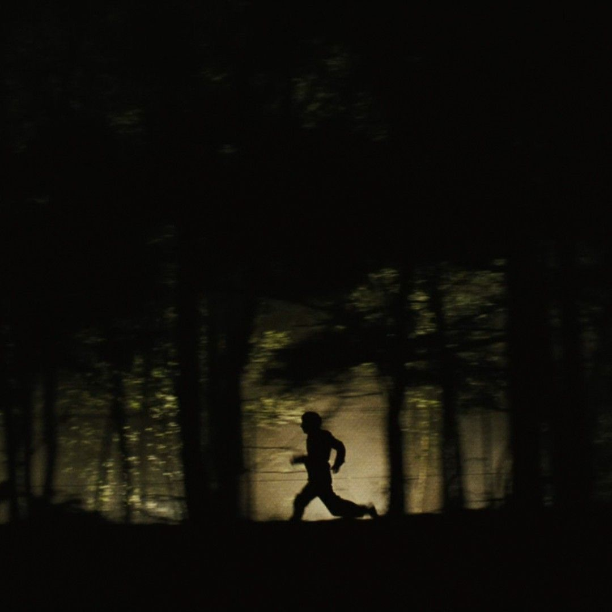
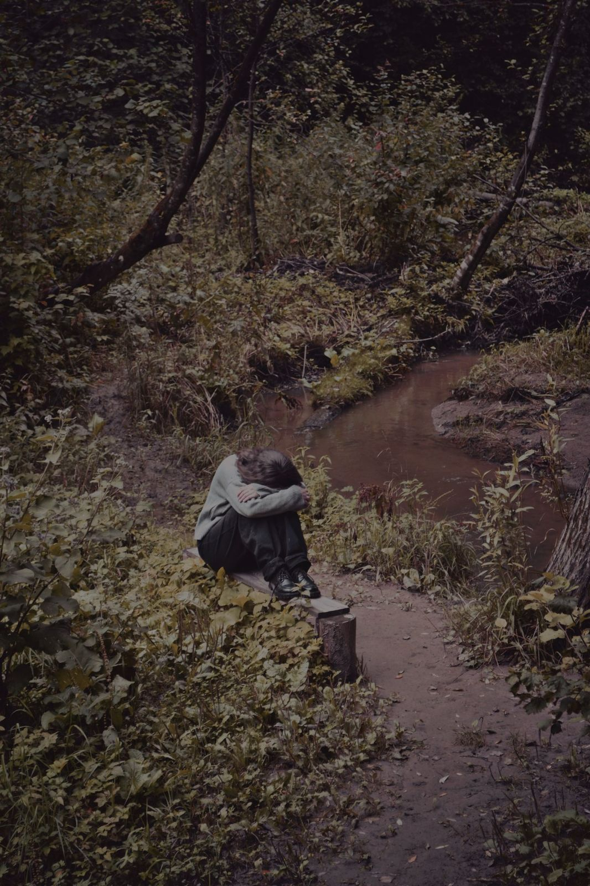
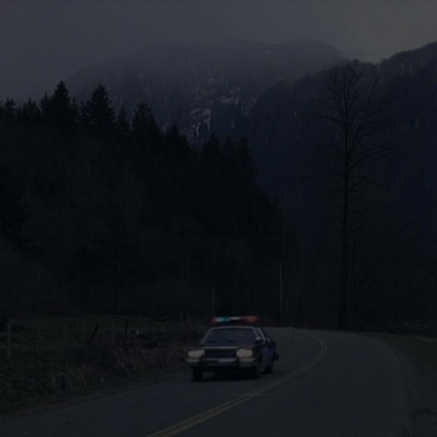
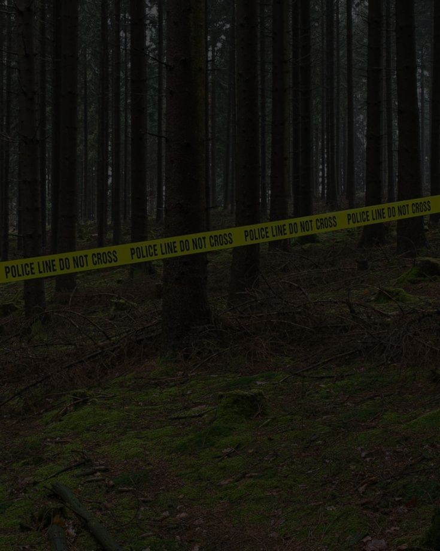

Salí de mi escondite y empecé a llamarlos por sus nombres -Abril, Sol, Noah, Mateo- dije llamandolos en voz baja No escuchaba nada, solo el silencio oscuro de ese bosque sombrío, hasta que escuché como unas hojas secas se quebraran detrás mío, me asusté y grité pero me tape la boca, eran Sol y Mateo.
 -Tenemos que irnos ya- dijo Sol -Hay que encontrar a Abril y Noah- dije con preocupación -Hay que llamar a la policía, este lugar está maldito- Respondió Mateo Caminamos hacia la cabaña buscando a Abril y Noah, pero solo estaba Abril, acurrucada en una esquina de la casa como si hubiera visto al mismo diablo.  Abril ¿Estás bien?- preguntamos todos mientras ibamos hacia ella -Chicos! esa cosa se llevó a Noah- dijo Abril preocupada y con una mirada perdida -¿¡Que!?- dijimos todos Después de un momento Mateo llamó a la policía para que ayudaran a buscar a Noah, pero fue inútil ya que no hallaron ningún rastro de él y supimos que ese señor del almacén no mentía.  